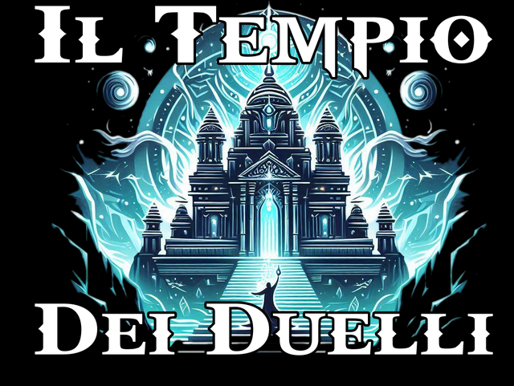

Eventi, tornei e una sfida stagionale a cui partecipare con il tuo libretto dei duelli.
Calendario eventi
Tornei e appuntamenti del Tempio.
Strumenti
Il Sentiero dei Sigilli
Libretto dei duelli, sigilli e campionato stagionale.
Black Market
Taglie sui rivali con i Black Credits, Most Wanted e registro del mercato.
Gestisci torneo
Accoppiamenti Swiss, risultati tavolo per tavolo e classifica.
Match Pro
Life Points, timer e cronologia del match.
Deck Analyzer
Ruoli, probabilità d’apertura e mani simulate.